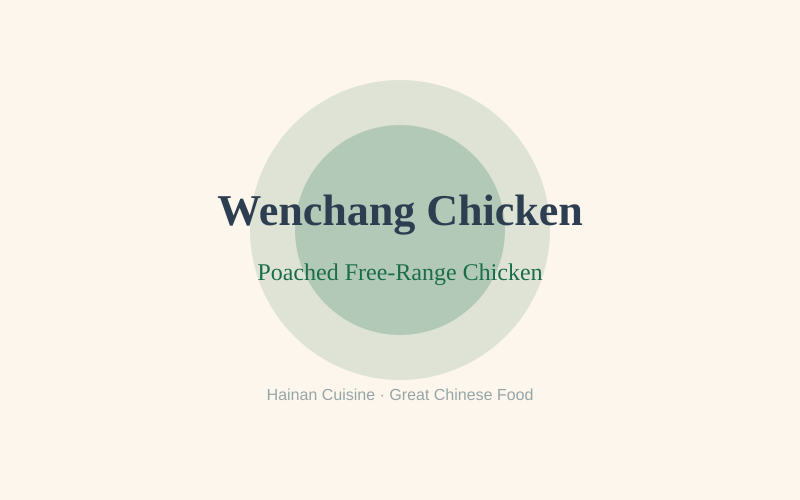
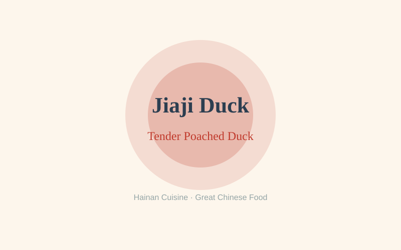
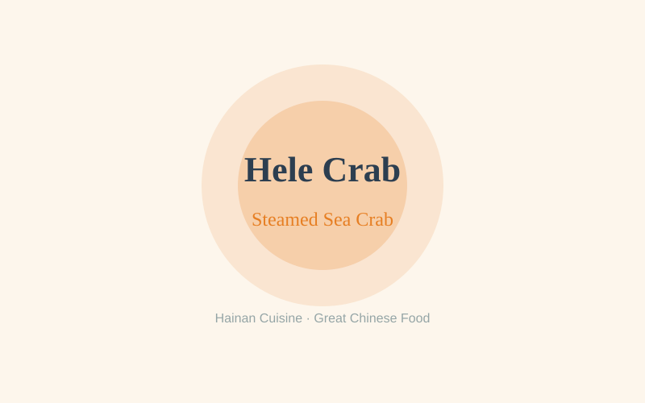
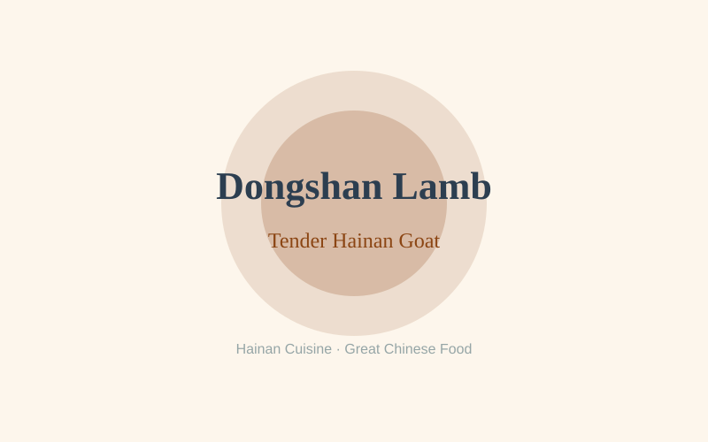

Hainan Cuisine — Regional Food Guide
A comprehensive guide to the authentic flavors, signature dishes, and culinary traditions of Hainan.
Signature Dishes of Hainan

Wenchang Chicken (Poached Free-Range Chicken)
Wenchang Chicken is the crown jewel of Hainanese cuisine and the first of the island's celebrated "Four Famous Dishes." The dish begins with a free-range chicken raised around Wenchang, on Hainan's northeast coast, where the birds roam freely and feed on rice bran, coconut, and peanut — a diet that produces exceptionally tender, flavorful meat with a thin layer of golden fat beneath the skin. The chicken is gently poached, whole, in barely simmering water until just cooked through, then plunged into cold water to firm the skin and lock in the juices; it is then chopped, bones and all, and served at room temperature. The true soul of the dish, however, is the dipping sauce: a vivid blend of minced ginger, chopped garlic, salt, spring onion, fresh lime juice, and a splash of the poaching broth, sometimes with a little chili. Diners dip each piece of glistening chicken into this bright, aromatic sauce, which sharpens the meat's clean, natural sweetness. It is served at festivals, banquets, and family reunions, and is the dish every Hainanese family measures its hospitality by.

Jiaji Duck (Tender Poached Duck)
Jiaji Duck, the second of Hainan's Four Famous Dishes, takes its name from Jiaji Town in Qionghai, on the island's east coast. It is made from a distinctive local breed — sometimes called the "Muscovy-style" duck — prized for its lean, sweet flesh, thin skin, and relatively little fat. The duck is traditionally poached whole in gently boiling water, often seasoned with ginger, spring onion, and a little rice wine, then left to rest so the meat stays moist and tender. The result is sliced into neat pieces and arranged on the plate, the pale, succulent meat fringed with a delicate layer of skin. Like Wenchang Chicken, the dish's character lives in its accompaniments: a dipping sauce of ginger, garlic, salt, and lime, and often a bowl of the fragrant cooking broth alongside. What elevates Jiaji Duck is its clean, mellow flavor and firm yet silky texture — qualities long attributed to the town's freshwater and the birds' diet of grain and stream life. It is a staple of Hainanese banquets, wedding feasts, and family gatherings, where it is offered as a symbol of generosity and good fortune, and is best enjoyed fresh, at room temperature, with a cup of tea.

Hele Crab (Steamed Sea Crab)
Hele Crab is the third of Hainan's Four Famous Dishes and the island's most celebrated seafood, named for the town of Hele in Wanning, where it is harvested. The prized specimen is a blue-green swimming crab whose habitat — the brackish, mineral-rich waters where the Wanquan River meets the South China Sea — gives its meat an exceptional sweetness and its roe a rich, buttery depth. The crab is almost always cooked by simple steaming, the method Hainanese cooks insist best preserves its delicate, briny flavor; it is sometimes seasoned with a scattering of ginger, spring onion, and a splash of rice wine. Served whole and cracked at the table, the crab offers tender white flesh in the claws and legs and, in season, generous golden roe in the shell, all meant to be dipped in a light ginger-vinegar or lime sauce. The dish embodies the Hainanese philosophy that the finest ingredients need little embellishment. Hele Crab is a centerpiece of coastal feasts, seafood banquets, and festive dinners, especially during the autumn and winter months when the crabs are plumpest — a taste of the island's abundant seas and a point of deep local pride.

Dongshan Lamb (Tender Hainan Goat)
Dongshan Lamb — sometimes called Dongshan Goat — completes Hainan's Four Famous Dishes. It comes from a small, dark-haired goat breed raised on Dongshan Ridge near Wanning, where the animals graze on the hills' wild herbs, tea leaves, and mineral-rich vegetation and drink from natural springs. This diet, along with the breed itself, produces meat that is remarkably tender, lean, and free of the strong "gamey" odor often associated with goat; locals claim the goats' grazing on rare mountain herbs is what makes the flesh so sweet and fine. The meat is most commonly prepared in one of two ways: slowly braised with ginger, soy, and spices until meltingly soft, or, most famously, served as a hotpot in which thin slices of the tender meat are swirled in a light broth and dipped in a savory sauce. In either form, the dish is warming and rich, yet surprisingly delicate. Dongshan Lamb is a fixture of Hainanese winter tables, family celebrations, and banquet menus, prized both for its flavor and for its reputed nourishing, warming properties in the cooler months — a rustic delicacy that reflects the island's highland pastures and time-honored farming traditions.
Food Culture of Hainan
Hainan cuisine is shaped by the island's tropical climate, its long coastline, and its history as a crossroads of maritime trade and migration. Freshness is the island's culinary creed: with year-round warmth and abundant seafood, Hainanese cooks favor gentle, quick methods — poaching, steaming, and light braising — that let natural flavors shine, rather than heavy sauces or aggressive seasoning. The "Four Famous Dishes" — Wenchang Chicken, Jiaji Duck, Hele Crab, and Dongshan Lamb — anchor the cuisine, but the island's table is equally rich in coconut-based soups and stews, fresh seafood, and cooling sweets like the beloved qingbuliang dessert soup. Coconut, lemongrass, ginger, garlic, and lime are the region's signature aromatics. Hainan also gave the world the famous Hainanese chicken rice, a dish carried by emigrants across Southeast Asia that has become a global favorite. Meals on the island are relaxed and communal, often enjoyed in the open air by the sea, and hospitality is expressed through generosity — a whole chicken, a plump crab, a brimming pot of soup. It is a cuisine of sun, sea, and simplicity, deeply tied to the rhythms of an island life.